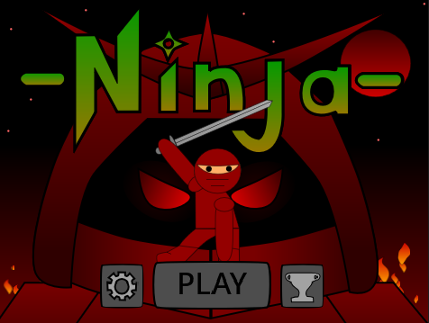
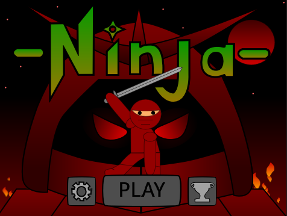
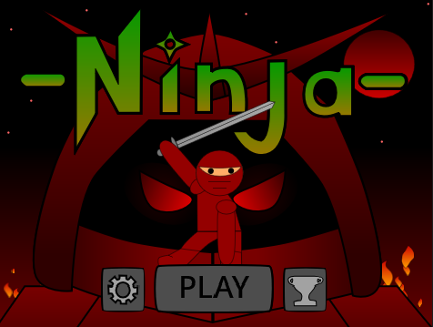

Email: penguinfalcon9@gmail.com
Hi, I’m James — a creative and curious student developer who got into coding through my love of games. I used to design games on paper, and discovering that everything I imagined could be built on a screen pushed me to learn more. I started with Scratch and eventually moved into JavaScript, Python, HTML, CSS, and other tools so I could bring my ideas to life. I’ve always been fascinated by how computers work, how to uncover hidden systems, and how to protect information, which naturally led me toward an interest in cybersecurity. As the world changes, AI has become another area that fascinates me — understanding how intelligent systems work, how they learn, and how they can be built is a goal I have set as a future step in my journey. I’m constantly exploring new ways to build, experiment, and understand the technology around me.
